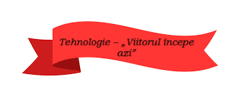

Tehnologia este peste tot – în telefoane, roboți, jocuri video și chiar în explorarea spațiului. Dacă ești curios cum funcționează lucrurile, ești deja un mic inventator!
💡 Vrei să creezi un joc simplu? Începe cu blocuri de cod în Scratch!
🤖 Află cum funcționează roboții și ce este inteligența artificială.
📱 Descoperă cum s-au transformat telefoanele mobile în ultimii 20 de ani.
Viitorul este al celor curioși. Cu tehnologia, poți construi orice îți imaginezi!